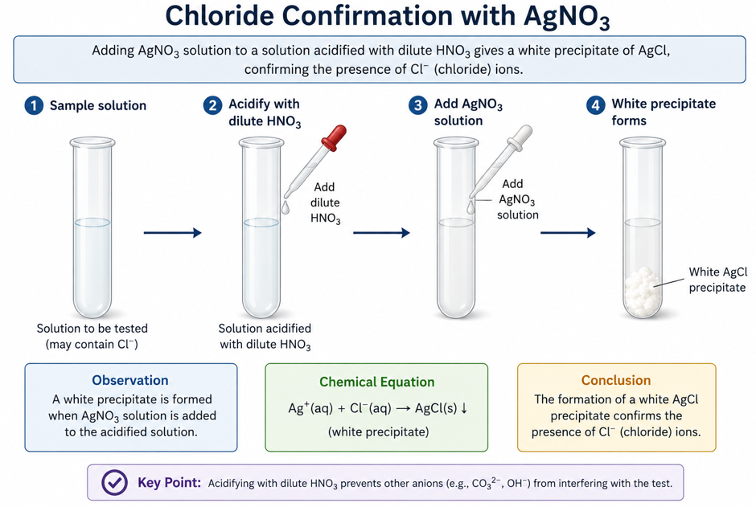

1. What Anion Analysis Means
Anion analysis is the identification of negative ions in a salt or solution. WAEC frequently tests anions using simple reagents such as dilute acids, lime water, barium chloride and silver nitrate. The candidate must record the observation first, then infer the anion.

Carbonate Test
Carbonate reacts with dilute acid to release CO₂, which turns lime water milky.

Sulphate Test
BaCl₂ gives white BaSO₄ precipitate with sulphate. The precipitate is insoluble in dilute HNO₃.

Chloride Test
AgNO₃ gives white AgCl precipitate with chloride after acidifying properly with dilute HNO₃.
2. WAEC Anion Analysis Master Table
| Anion | Test | Observation | Inference | Equation |
|---|---|---|---|---|
| CO₃²⁻ | Add dilute HNO₃ or HCl, pass gas into lime water | Effervescence; colourless gas turns lime water milky | Carbonate present; CO₂ evolved | CO₂ + Ca(OH)₂ → CaCO₃ + H₂O |
| SO₄²⁻ | Add BaCl₂, then dilute HNO₃ | White precipitate insoluble in dilute HNO₃ | Sulphate present | Ba²⁺ + SO₄²⁻ → BaSO₄ |
| Cl⁻ | Acidify with dilute HNO₃, then add AgNO₃ | White precipitate | Chloride present | Ag⁺ + Cl⁻ → AgCl |
| NO₃⁻ | Warm with NaOH and aluminium foil, test gas with moist red litmus | Pungent gas turns moist red litmus blue | Nitrate present | NO₃⁻ is reduced to NH₃ under alkaline conditions |
| SO₃²⁻ | Add dilute acid | Choking gas evolved, decolourizes acidified KMnO₄ | Sulphite present | SO₂ gas formed |
3. Practical Class: Carbonate Ion Test
Task
A white solid C contains lead(II) carbonate. Test for the anion present using dilute HNO₃ and lime water.
Procedure
- Put a spatulaful of C into a test tube.
- Add dilute HNO₃ carefully.
- Warm gently if gas evolution is slow.
- Pass the evolved gas into lime water.
- Record observation and inference.
Equation
PbCO₃(s) + 2HNO₃(aq) → Pb(NO₃)₂(aq) + CO₂(g) + H₂O(l)
CO₂(g) + Ca(OH)₂(aq) → CaCO₃(s) + H₂O(l)
Teacher guide: Label the test tube containing C and dilute HNO3, delivery tube, lime water, gas bubbles and milky lime water. Milky lime water confirms carbon dioxide.
Teacher
Students, this is one of the most repeated WAEC anion tests. Carbonate + acid gives carbon dioxide. The confirmatory test is lime water turning milky.
Student
Sir, why does lime water turn milky?
Teacher
Carbon dioxide reacts with calcium hydroxide in lime water to form calcium carbonate, which is insoluble and appears milky.
WAEC Answer Format
| Observation | Inference |
|---|---|
| Effervescence; colourless gas evolved; gas turns lime water milky. | CO₂ evolved; CO₃²⁻ present. |
4. Practical Class: Sulphate Ion Test Using BaCl₂
Task
To test a solution for sulphate ion using aqueous barium chloride and dilute HNO₃.
Procedure
- Place about 2 cm³ of the solution in a test tube.
- Add a few drops of BaCl₂(aq).
- If white precipitate forms, add dilute HNO₃.
- Observe whether the precipitate dissolves or remains insoluble.
Equation
Ba²⁺(aq) + SO₄²⁻(aq) → BaSO₄(s)
Show: test solution + BaCl2; white BaSO4 precipitate remains insoluble in dilute acid.
Teacher
BaCl₂ is used because Ba²⁺ reacts with SO₄²⁻ to form BaSO₄, a white insoluble precipitate.
Student
Sir, if no precipitate forms, what should I write?
Teacher
Write exactly what happened: “No white precipitate formed.” Then infer: “SO₄²⁻ absent.” WAEC accepts correct negative observations when the test is properly performed.
5. Practical Class: Chloride Ion Test Using AgNO₃
Task
To test a solution for chloride ion using dilute HNO₃ and silver trioxonitrate(V) solution.
Procedure
- Place about 2 cm³ of the solution in a test tube.
- Acidify with dilute HNO₃.
- Add AgNO₃(aq).
- Observe any precipitate formed.
Equation
Ag⁺(aq) + Cl⁻(aq) → AgCl(s)
Show: test solution + AgNO3; white AgCl precipitate confirms chloride.
Teacher
Before AgNO₃ test, we acidify with dilute HNO₃. This removes interfering ions and does not introduce chloride.
Student
Sir, why not use HCl before adding AgNO₃?
Teacher
Excellent question. HCl contains Cl⁻. If you add HCl before AgNO₃, the chloride you detect may come from the acid, not the sample. That gives a false positive.
6. Full WAEC-Style Mixed Qualitative Analysis Task
Question
C is a white solid mixture containing an inorganic salt and an organic food substance. Carry out the following tests and complete the observation/inference table.
- Add distilled water to C and shake.
- Test with red and blue litmus papers.
- Filter the mixture.
- Add iodine solution to the residue.
- Add dilute HNO₃ to another portion of C and warm gently.
- Pass any gas evolved into lime water.
- To the acid solution, add NaOH in drops and then in excess.
- To another portion, add NH₃ in drops and then in excess.
- To another portion, add BaCl₂ followed by dilute HNO₃.
- To another portion, add AgNO₃ after acidifying with dilute HNO₃.
WAEC Marking Table
| Test | Observation | Inference |
|---|---|---|
| C + water | White suspension; solid does not dissolve completely. | Insoluble substance present. |
| Litmus test | No change on red or blue litmus. | Neutral or nearly neutral mixture. |
| Filtration | Colourless filtrate and white residue. | Residue retained for further test. |
| Residue + iodine | Blue-black colouration. | Starch present. |
| C + dilute HNO₃ | Effervescence; colourless gas evolved. | Carbonate suspected. |
| Gas + lime water | Lime water turns milky. | CO₂ confirmed; CO₃²⁻ present. |
| Acid solution + NaOH drops | White precipitate. | Pb²⁺/Zn²⁺/Al³⁺ possible. |
| Excess NaOH | White precipitate dissolves. | Amphoteric ion present. |
| Acid solution + NH₃ drops | White precipitate. | Pb²⁺/Al³⁺/Zn²⁺ possible. |
| Excess NH₃ | White precipitate insoluble. | Pb²⁺ indicated. |
| BaCl₂ + dilute HNO₃ | No white precipitate. | SO₄²⁻ absent. |
| AgNO₃ after dilute HNO₃ | No white precipitate. | Cl⁻ absent. |
Final Conclusion
C contains lead(II) carbonate and starch. The carbonate is confirmed by CO₂ gas turning lime water milky, starch is confirmed by iodine, and Pb²⁺ is supported by NaOH/NH₃ behaviour.
7. Final Exam-Ready Summary
Carbonate
Acid gives effervescence. CO₂ turns lime water milky.
Sulphate
BaCl₂ gives white BaSO₄ precipitate insoluble in dilute HNO₃.
Chloride
Acidify with dilute HNO₃, then add AgNO₃. White AgCl confirms chloride.
Starch
Iodine solution gives blue-black colour.
Pb²⁺
White precipitate with NaOH dissolves in excess. White precipitate with NH₃ is insoluble in excess.
Observation vs Inference
Observation: lime water turns milky. Inference: CO₂ is present.